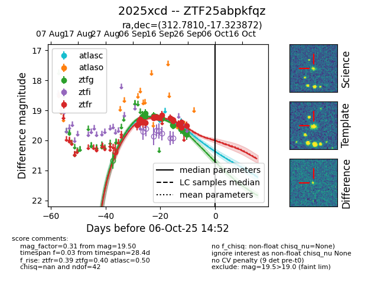
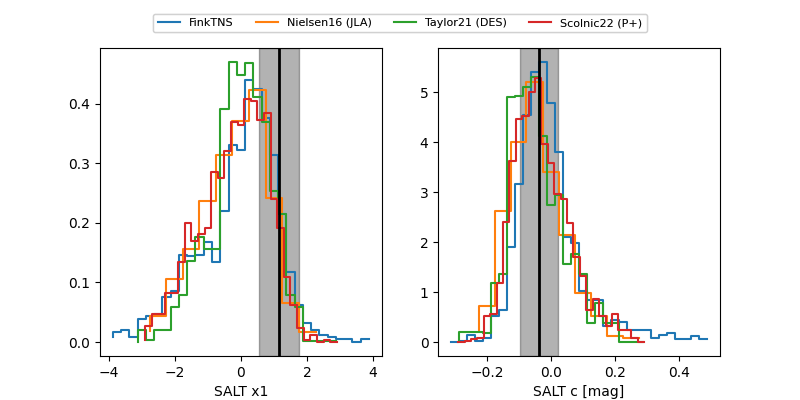

FINK: ZTF25abpkfqz
Lasair: ZTF25abpkfqz
ALeRCE: ZTF25abpkfqz
TNS: 2025xcd
YSE: 2025xcd
ZTF25abpkfqz (ztf,fink)
2025xcd (tns,yse)
equatorial (ra, dec) = (312.7810,-17.32387)
galactic (l, b) = (29.6199,-34.02671)


last atlasc=19.23, ztfg=19.73, ztfr=19.50
1 atlasc, 16 ztfg, 19 ztfr detections